Links
A combination of personal websites I enjoy and other resources I find helpful, all currently related to technology. Please do inform me if you find any links are dead.
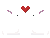
Neighbours
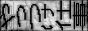
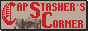
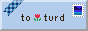
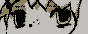
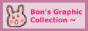
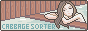
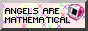
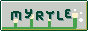

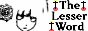
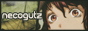
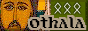
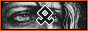
Resources
Void Linux: My preferred Linux distribution. Stable rolling release and independent. I like to do a base live image install and then add a window manager rather than installing with xfce.
suckless: Minimalistic software that sucks less. I use dwm and st with some patches, such as scroll and sixel support.
jstris: Online competitive Tetris that you can play in your browser. Minimalistic and fast.
cmus: Terminal-based music player.
vimium: Browser extension that aids keyboard-driven webpage navigation.
GrapheneOS: Privacy-oriented mobile OS. Currently intended for use with Pixel phones.
4chan X: Script that makes 4chan more pleasant to browse. It provides hover previews for images and quotes, image expansion, filtering additions to help you filter out degeneracy, and more.
OneeChan: Script that I use to make 4chan look nicer.